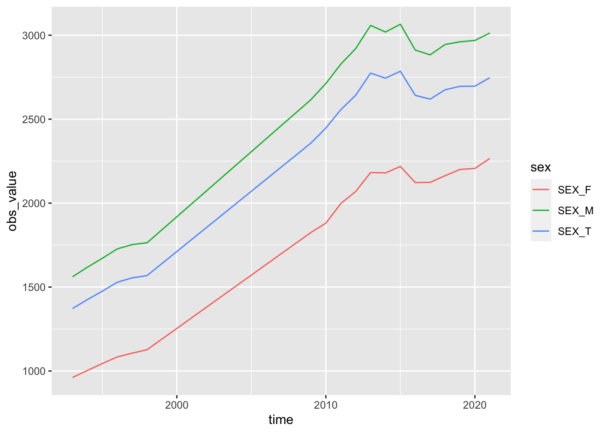
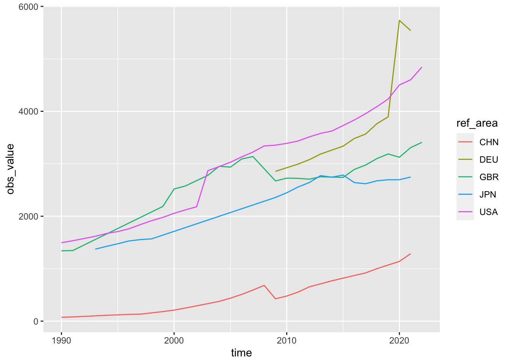
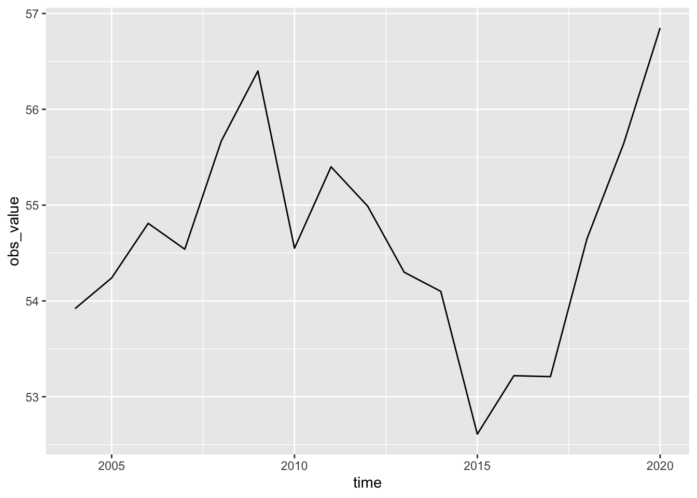
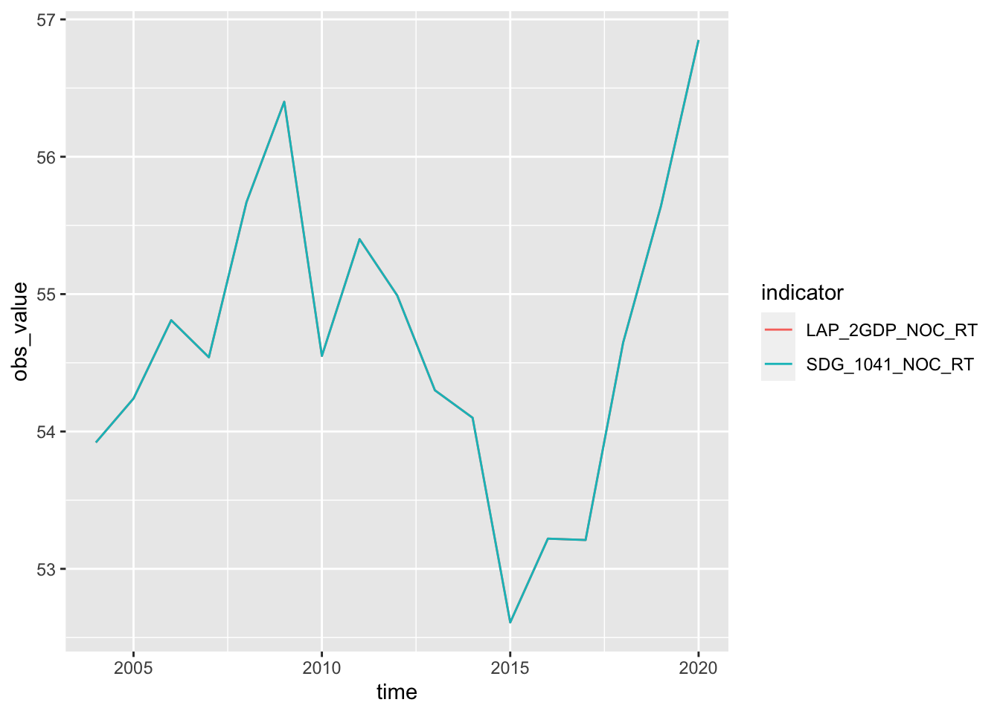
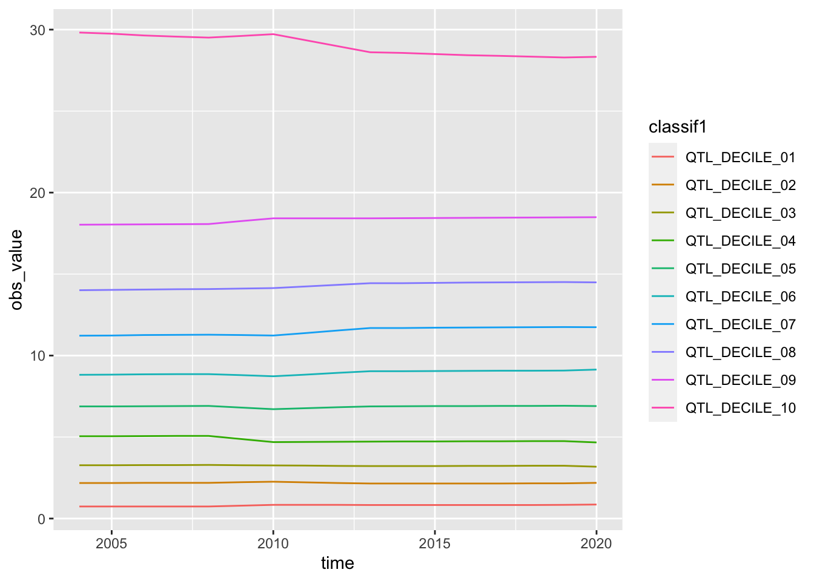
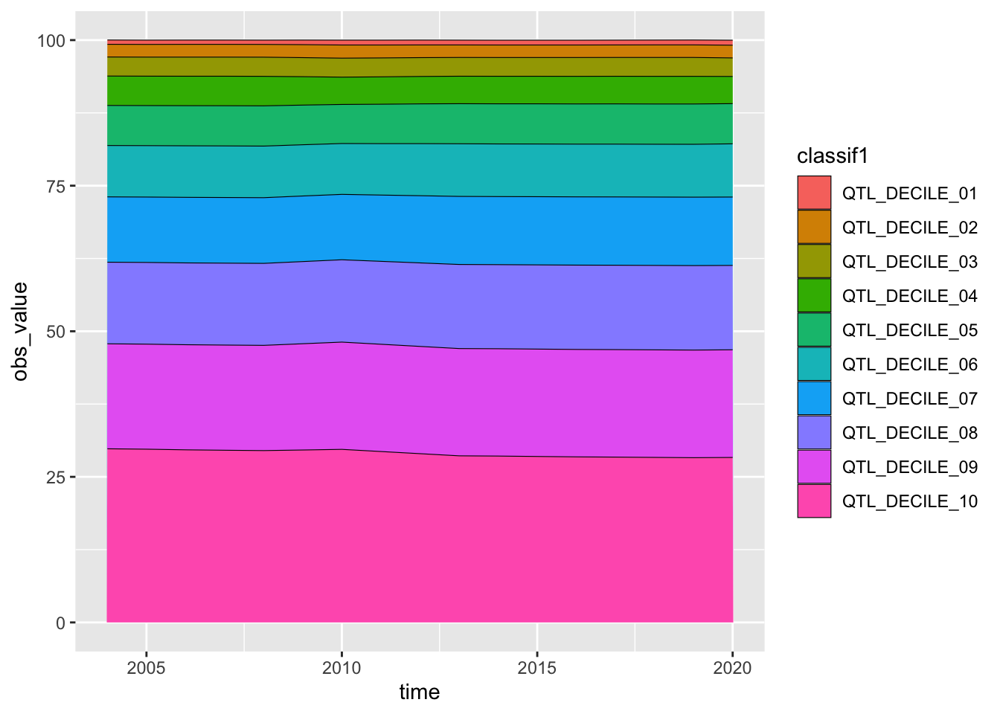
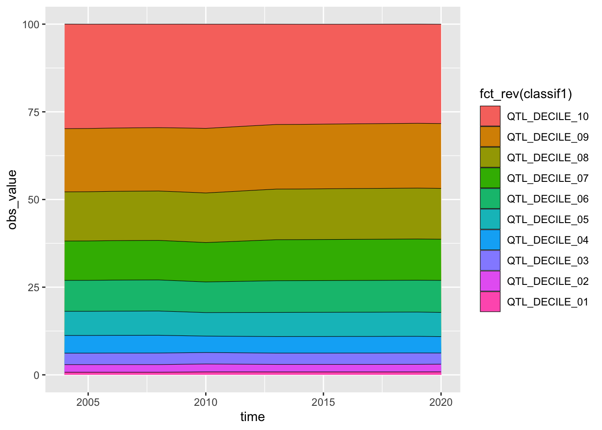

Code
install.packages("Rilostat") # 最初に一度だけインストールWebsite: https://ilostat.ilo.org/data/
検索をすると、ILOSTAT Explorer が立ち上がります。
例：Average monthly earnings of employees by sex and economic activity -- Annual - ILOSTAT Explorer
R パッケージ Rilostat
CRAN パッケージサイト：https://cran.r-project.org/web/packages/Rilostat/index.html
Rilostat: ILO Open Data via Ilostat Bulk Download Facility or SDMX Web Service
マニュアル Manual
活用例 Vignettes: https://ilostat.github.io/Rilostat/articles/Rilostat.html
install.packages("Rilostat") # 最初に一度だけインストールlibrary(tidyverse)── Attaching core tidyverse packages ──────────────────────── tidyverse 2.0.0 ──
✔ dplyr 1.1.3 ✔ readr 2.1.4
✔ forcats 1.0.0 ✔ stringr 1.5.0
✔ ggplot2 3.4.3 ✔ tibble 3.2.1
✔ lubridate 1.9.2 ✔ tidyr 1.3.0
✔ purrr 1.0.2
── Conflicts ────────────────────────────────────────── tidyverse_conflicts() ──
✖ dplyr::filter() masks stats::filter()
✖ dplyr::lag() masks stats::lag()
ℹ Use the conflicted package (<http://conflicted.r-lib.org/>) to force all conflicts to become errorslibrary(Rilostat)検索を wage でしてみるがどうも、十分現れない。
get_ilostat_toc(search = 'wage')# A tibble: 2 × 16
id indicator indicator.label freq freq.label size data.start data.end
<chr> <chr> <chr> <chr> <chr> <chr> <chr> <chr>
1 EAR_4MMN… EAR_4MMN… Statutory nomi… A Annual 61.6… 1980 2023
2 EAR_GGAP… EAR_GGAP… Gender wage ga… A Annual 74.9… 1979 2022
# ℹ 8 more variables: last.update <chr>, n.records <dbl>, collection <chr>,
# collection.label <chr>, subject <chr>, subject.label <chr>, database <chr>,
# database.label <chr>earnings で検索すると、現れる。検索の仕方は検討する必要がある。
get_ilostat_toc(search = 'earnings')# A tibble: 13 × 16
id indicator indicator.label freq freq.label size data.start data.end
<chr> <chr> <chr> <chr> <chr> <chr> <chr> <chr>
1 SDG_085… SDG_0851… SDG indicator … A Annual 267.… 1991 2022
2 EAR_4MT… EAR_4MTH… Average monthl… A Annual 2.81… 1969 2022
3 EAR_4MT… EAR_4MTH… Average monthl… A Annual 1.33… 1991 2022
4 EAR_4MT… EAR_4MTH… Average monthl… A Annual 117.… 1996 2022
5 GED_PEA… GED_PEAR… Mean nominal m… A Annual 286.… 1998 2022
6 GED_PEA… GED_PEAR… Mean nominal m… Q Quarterly 572.… 1998Q1 2022Q3
7 GED_PEA… GED_PEAR… Mean nominal m… A Annual 127.… 1998 2022
8 GED_PEA… GED_PEAR… Mean nominal m… Q Quarterly 233.… 2001Q3 2022Q3
9 EAR_XEE… EAR_XEES… Mean nominal m… Q Quarterly 1.13… 1994Q1 2023Q2
10 EAR_XEE… EAR_XEES… Mean nominal m… M Monthly 466.… 1990M01 2023M08
11 EAR_4HR… EAR_4HRL… Average hourly… A Annual 663.… 1969 2022
12 MST_EAR… MST_EARA… Mean nominal m… A Annual 39.5… 1991 2022
13 MST_EAR… MST_EARA… Mean nominal m… A Annual 23.5… 1991 2022
# ℹ 8 more variables: last.update <chr>, n.records <dbl>, collection <chr>,
# collection.label <chr>, subject <chr>, subject.label <chr>, database <chr>,
# database.label <chr>id がわかっていればその一部を入れて検索も可能。
get_ilostat_toc(search = 'EAR_4MTH')# A tibble: 3 × 16
id indicator indicator.label freq freq.label size data.start data.end
<chr> <chr> <chr> <chr> <chr> <chr> <chr> <chr>
1 EAR_4MTH… EAR_4MTH… Average monthl… A Annual 2.81… 1969 2022
2 EAR_4MTH… EAR_4MTH… Average monthl… A Annual 1.33… 1991 2022
3 EAR_4MTH… EAR_4MTH… Average monthl… A Annual 117.… 1996 2022
# ℹ 8 more variables: last.update <chr>, n.records <dbl>, collection <chr>,
# collection.label <chr>, subject <chr>, subject.label <chr>, database <chr>,
# database.label <chr>データをダウンロード
EAR_4MTH_SEX_ECO_CUR_NB_A: Average monthly earnings of employees by sex and economic activity
df_ilo_wages <- get_ilostat("EAR_4MTH_SEX_ECO_CUR_NB_A", cache = FALSE)write_csv(df_ilo_wages, "./data/df_ilo_wages.csv")df_ilo_wages <- read_csv("./data/df_ilo_wages.csv")Rows: 353008 Columns: 12
── Column specification ────────────────────────────────────────────────────────
Delimiter: ","
chr (10): ref_area, source, indicator, sex, classif1, classif2, obs_status, ...
dbl (2): time, obs_value
ℹ Use `spec()` to retrieve the full column specification for this data.
ℹ Specify the column types or set `show_col_types = FALSE` to quiet this message.見てみる
ダウンロードしたファイルでは、time は、Chr になっているが、一旦保存し、read_csv で読み込むと、すでに、Dbl になっている。
df_ilo_wages# A tibble: 353,008 × 12
ref_area source indicator sex classif1 classif2 time obs_value obs_status
<chr> <chr> <chr> <chr> <chr> <chr> <dbl> <dbl> <chr>
1 ABW AA:22 EAR_4MTH_… SEX_T ECO_AGG… CUR_TYP… 2010 3013 <NA>
2 ABW AA:22 EAR_4MTH_… SEX_T ECO_AGG… CUR_TYP… 2010 1860. <NA>
3 ABW AA:22 EAR_4MTH_… SEX_T ECO_AGG… CUR_TYP… 2010 1683. <NA>
4 ABW AA:22 EAR_4MTH_… SEX_M ECO_AGG… CUR_TYP… 2010 3338 <NA>
5 ABW AA:22 EAR_4MTH_… SEX_M ECO_AGG… CUR_TYP… 2010 2061. <NA>
6 ABW AA:22 EAR_4MTH_… SEX_M ECO_AGG… CUR_TYP… 2010 1865. <NA>
7 ABW AA:22 EAR_4MTH_… SEX_F ECO_AGG… CUR_TYP… 2010 2713 <NA>
8 ABW AA:22 EAR_4MTH_… SEX_F ECO_AGG… CUR_TYP… 2010 1675. <NA>
9 ABW AA:22 EAR_4MTH_… SEX_F ECO_AGG… CUR_TYP… 2010 1516. <NA>
10 ABW AA:22 EAR_4MTH_… SEX_T ECO_ISI… CUR_TYP… 2010 3013 <NA>
# ℹ 352,998 more rows
# ℹ 3 more variables: note_classif <chr>, note_indicator <chr>,
# note_source <chr>それぞれ、どのような値があるか、カテゴリカルな列のみみてみる。
df_ilo_wages |> filter(ref_area == "JPN", time == 2020) |>
select(1:6) |> lapply(unique)$ref_area
[1] "JPN"
$source
[1] "DA:260"
$indicator
[1] "EAR_4MTH_SEX_ECO_CUR_NB"
$sex
[1] "SEX_T" "SEX_M" "SEX_F"
$classif1
[1] "ECO_AGGREGATE_TOTAL" "ECO_ISIC4_TOTAL" "ECO_ISIC4_B"
[4] "ECO_ISIC4_C" "ECO_ISIC4_F" "ECO_ISIC4_G"
[7] "ECO_ISIC4_H" "ECO_ISIC4_I" "ECO_ISIC4_J"
[10] "ECO_ISIC4_K" "ECO_ISIC4_L" "ECO_ISIC4_M"
[13] "ECO_ISIC4_P" "ECO_ISIC4_Q" "ECO_ISIC4_R"
[16] "ECO_ISIC4_S"
$classif2
[1] "CUR_TYPE_LCU" "CUR_TYPE_PPP" "CUR_TYPE_USD"classif1 と classif2 の意味を確認する必要があるので、辞書機能を使って、みてみる。
get_ilostat_dic("classif1") |> filter(grepl("ECO", classif1))# A tibble: 86 × 2
classif1 classif1.label
<chr> <chr>
1 ECO_AGNAG_TOTAL Economic activity (Agriculture, Non-Agriculture): Total
2 ECO_AGNAG_AGR Economic activity (Agriculture, Non-Agriculture): Agricu…
3 ECO_AGNAG_NAG Economic activity (Agriculture, Non-Agriculture): Non-ag…
4 ECO_SECTOR_TOTAL Economic activity (Broad sector): Total
5 ECO_SECTOR_AGR Economic activity (Broad sector): Agriculture
6 ECO_SECTOR_NAG Economic activity (Broad sector): Non-agriculture
7 ECO_SECTOR_IND Economic activity (Broad sector): Industry
8 ECO_SECTOR_SER Economic activity (Broad sector): Services
9 ECO_SECTOR_X Economic activity (Broad sector): Not classified
10 ECO_AGGREGATE_TOTAL Economic activity (Aggregate): Total
# ℹ 76 more rowsget_ilostat_dic("classif2") |> filter(grepl("CUR", classif2))# A tibble: 3 × 2
classif2 classif2.label
<chr> <chr>
1 CUR_TYPE_LCU Currency: Local currency
2 CUR_TYPE_PPP Currency: 2017 PPP $
3 CUR_TYPE_USD Currency: U.S. dollars 一応、ECO_AGGREGATE_TOTAL と、CUR_TYPE_PPP を指標にとり、グラフを書いてみる。year が 文字列になっている部分のみ修正。
df_ilo_wages |> filter(classif1 == "ECO_AGGREGATE_TOTAL", classif2 == "CUR_TYPE_PPP", ref_area == "JPN") |> mutate(time = as.numeric(time)) |>
ggplot(aes(time, obs_value, color = sex)) + geom_line()
他の国の状況もみてみる。
df_ilo_wages |> filter(ref_area %in% c("JPN", "GBR", "DEU", "USA", "CHN")) |>
filter(sex == "SEX_T") |>
filter(classif1 == "ECO_AGGREGATE_TOTAL", classif2 == "CUR_TYPE_PPP") |>
mutate(time = as.numeric(time)) |>
ggplot(aes(time, obs_value, color = ref_area)) + geom_line()
type = “both” とすると、指標の内容も書かれていて、get_ilostat_dic() を使わなくて良いが、余分なものが多くて見にくい面もある。
df_ilo_wages_both <- get_ilostat("EAR_4MTH_SEX_ECO_CUR_NB_A", type = "both", cache = FALSE)
df_ilo_wages_both# A tibble: 353,008 × 22
ref_area ref_area.label source source.label indicator indicator.label sex
<chr> <chr> <chr> <chr> <chr> <chr> <chr>
1 ABW Aruba AA:22 PC - Populati… EAR_4MTH… Average monthl… SEX_T
2 ABW Aruba AA:22 PC - Populati… EAR_4MTH… Average monthl… SEX_T
3 ABW Aruba AA:22 PC - Populati… EAR_4MTH… Average monthl… SEX_T
4 ABW Aruba AA:22 PC - Populati… EAR_4MTH… Average monthl… SEX_M
5 ABW Aruba AA:22 PC - Populati… EAR_4MTH… Average monthl… SEX_M
6 ABW Aruba AA:22 PC - Populati… EAR_4MTH… Average monthl… SEX_M
7 ABW Aruba AA:22 PC - Populati… EAR_4MTH… Average monthl… SEX_F
8 ABW Aruba AA:22 PC - Populati… EAR_4MTH… Average monthl… SEX_F
9 ABW Aruba AA:22 PC - Populati… EAR_4MTH… Average monthl… SEX_F
10 ABW Aruba AA:22 PC - Populati… EAR_4MTH… Average monthl… SEX_T
# ℹ 352,998 more rows
# ℹ 15 more variables: sex.label <chr>, classif1 <chr>, classif1.label <chr>,
# classif2 <chr>, classif2.label <chr>, time <chr>, obs_value <dbl>,
# obs_status <chr>, obs_status.label <chr>, note_classif <chr>,
# note_classif.label <chr>, note_indicator <chr>, note_indicator.label <chr>,
# note_source <chr>, note_source.label <chr>colnames(df_ilo_wages_both) [1] "ref_area" "ref_area.label" "source"
[4] "source.label" "indicator" "indicator.label"
[7] "sex" "sex.label" "classif1"
[10] "classif1.label" "classif2" "classif2.label"
[13] "time" "obs_value" "obs_status"
[16] "obs_status.label" "note_classif" "note_classif.label"
[19] "note_indicator" "note_indicator.label" "note_source"
[22] "note_source.label" colnames(df_ilo_wages) [1] "ref_area" "source" "indicator" "sex"
[5] "classif1" "classif2" "time" "obs_value"
[9] "obs_status" "note_classif" "note_indicator" "note_source" get_ilostat_toc(search = 'income')# A tibble: 4 × 16
id indicator indicator.label freq freq.label size data.start data.end
<chr> <chr> <chr> <chr> <chr> <chr> <chr> <chr>
1 SDG_1041… SDG_1041… SDG indicator … A Annual 17.9… 2004 2020
2 LAP_2GDP… LAP_2GDP… Labour income … A Annual 24.1… 2004 2020
3 LAP_2LID… LAP_2LID… Labour income … A Annual 240.… 2004 2020
4 LAP_2FTM… LAP_2FTM… Gender income … A Annual 7.54… 2004 2020
# ℹ 8 more variables: last.update <chr>, n.records <dbl>, collection <chr>,
# collection.label <chr>, subject <chr>, subject.label <chr>, database <chr>,
# database.label <chr>id_income <- get_ilostat_toc(search = 'income') |> pull(id) |> unique()
id_income[1] "SDG_1041_NOC_RT_A" "LAP_2GDP_NOC_RT_A" "LAP_2LID_QTL_RT_A"
[4] "LAP_2FTM_NOC_RT_A"SDG_1041_NOC_RT_A: SDG indicator 10.4.1 - Labour income share as a percent of GDP (%)
df_sdg_lis <- get_ilostat("SDG_1041_NOC_RT_A", cache = FALSE) |>
mutate(time = as.numeric(time))
df_sdg_lis# A tibble: 3,383 × 5
ref_area source indicator time obs_value
<chr> <chr> <chr> <dbl> <dbl>
1 AFG XA:2198 SDG_1041_NOC_RT 2020 45.0
2 AFG XA:2198 SDG_1041_NOC_RT 2019 44.0
3 AFG XA:2198 SDG_1041_NOC_RT 2018 44.4
4 AFG XA:2198 SDG_1041_NOC_RT 2017 44.3
5 AFG XA:2198 SDG_1041_NOC_RT 2016 44.4
6 AFG XA:2198 SDG_1041_NOC_RT 2015 44.5
7 AFG XA:2198 SDG_1041_NOC_RT 2014 44.4
8 AFG XA:2198 SDG_1041_NOC_RT 2013 44.0
9 AFG XA:2198 SDG_1041_NOC_RT 2012 43.0
10 AFG XA:2198 SDG_1041_NOC_RT 2011 44.8
# ℹ 3,373 more rowsLAP_2GDP_NOC_RT_A: Labour income share as a percent of GDP -- ILO modelled estimates, Nov. 2021 (%)
df_income_dist <- get_ilostat("LAP_2GDP_NOC_RT_A", cache = FALSE) |>
mutate(time = as.numeric(time))
df_income_dist# A tibble: 4,607 × 6
ref_area source indicator time obs_value obs_status
<chr> <chr> <chr> <dbl> <dbl> <chr>
1 AFG XA:2198 LAP_2GDP_NOC_RT 2020 45.0 I
2 AFG XA:2198 LAP_2GDP_NOC_RT 2019 44.0 I
3 AFG XA:2198 LAP_2GDP_NOC_RT 2018 44.4 I
4 AFG XA:2198 LAP_2GDP_NOC_RT 2017 44.3 I
5 AFG XA:2198 LAP_2GDP_NOC_RT 2016 44.4 I
6 AFG XA:2198 LAP_2GDP_NOC_RT 2015 44.5 I
7 AFG XA:2198 LAP_2GDP_NOC_RT 2014 44.4 I
8 AFG XA:2198 LAP_2GDP_NOC_RT 2013 44.0 I
9 AFG XA:2198 LAP_2GDP_NOC_RT 2012 43.0 I
10 AFG XA:2198 LAP_2GDP_NOC_RT 2011 44.8 I
# ℹ 4,597 more rowsLAP_2LID_QTL_RT_A: Labour income distribution – ILO modelled estimates, Nov. 2021 (%)
df_labor_income_share <- get_ilostat("LAP_2LID_QTL_RT_A", cache = FALSE) |>
mutate(time = as.numeric(time))
df_labor_income_share# A tibble: 46,070 × 7
ref_area source indicator classif1 time obs_value obs_status
<chr> <chr> <chr> <chr> <dbl> <dbl> <chr>
1 AFG XA:2198 LAP_2LID_QTL_RT QTL_DECILE_01 2020 0.51 M
2 AFG XA:2198 LAP_2LID_QTL_RT QTL_DECILE_02 2020 1.11 M
3 AFG XA:2198 LAP_2LID_QTL_RT QTL_DECILE_03 2020 1.79 M
4 AFG XA:2198 LAP_2LID_QTL_RT QTL_DECILE_04 2020 3.08 M
5 AFG XA:2198 LAP_2LID_QTL_RT QTL_DECILE_05 2020 5 M
6 AFG XA:2198 LAP_2LID_QTL_RT QTL_DECILE_06 2020 7.14 M
7 AFG XA:2198 LAP_2LID_QTL_RT QTL_DECILE_07 2020 10.4 M
8 AFG XA:2198 LAP_2LID_QTL_RT QTL_DECILE_08 2020 14.0 M
9 AFG XA:2198 LAP_2LID_QTL_RT QTL_DECILE_09 2020 19.3 M
10 AFG XA:2198 LAP_2LID_QTL_RT QTL_DECILE_10 2020 37.7 M
# ℹ 46,060 more rowsLAP_2FTM_NOC_RT_A: Gender income gap, ratio of women’s to men’s labour income – ILO modelled estimates, Nov. 202
df_gender_income_gap <- get_ilostat("LAP_2GDP_NOC_RT_A", cache = FALSE) |>
mutate(time = as.numeric(time))
df_gender_income_gap# A tibble: 4,607 × 6
ref_area source indicator time obs_value obs_status
<chr> <chr> <chr> <dbl> <dbl> <chr>
1 AFG XA:2198 LAP_2GDP_NOC_RT 2020 45.0 I
2 AFG XA:2198 LAP_2GDP_NOC_RT 2019 44.0 I
3 AFG XA:2198 LAP_2GDP_NOC_RT 2018 44.4 I
4 AFG XA:2198 LAP_2GDP_NOC_RT 2017 44.3 I
5 AFG XA:2198 LAP_2GDP_NOC_RT 2016 44.4 I
6 AFG XA:2198 LAP_2GDP_NOC_RT 2015 44.5 I
7 AFG XA:2198 LAP_2GDP_NOC_RT 2014 44.4 I
8 AFG XA:2198 LAP_2GDP_NOC_RT 2013 44.0 I
9 AFG XA:2198 LAP_2GDP_NOC_RT 2012 43.0 I
10 AFG XA:2198 LAP_2GDP_NOC_RT 2011 44.8 I
# ℹ 4,597 more rows4つの指標一度に取ることも可能。
df_income <- get_ilostat(c("SDG_1041_NOC_RT_A", "LAP_2GDP_NOC_RT_A", "LAP_2LID_QTL_RT_A", "LAP_2FTM_NOC_RT_A"), cache = FALSE) |>
mutate(time = as.numeric(time))
df_income# A tibble: 55,454 × 7
ref_area source indicator classif1 time obs_value obs_status
<chr> <chr> <chr> <chr> <dbl> <dbl> <chr>
1 AFG XA:2198 SDG_1041_NOC_RT <NA> 2020 45.0 <NA>
2 AFG XA:2198 SDG_1041_NOC_RT <NA> 2019 44.0 <NA>
3 AFG XA:2198 SDG_1041_NOC_RT <NA> 2018 44.4 <NA>
4 AFG XA:2198 SDG_1041_NOC_RT <NA> 2017 44.3 <NA>
5 AFG XA:2198 SDG_1041_NOC_RT <NA> 2016 44.4 <NA>
6 AFG XA:2198 SDG_1041_NOC_RT <NA> 2015 44.5 <NA>
7 AFG XA:2198 SDG_1041_NOC_RT <NA> 2014 44.4 <NA>
8 AFG XA:2198 SDG_1041_NOC_RT <NA> 2013 44.0 <NA>
9 AFG XA:2198 SDG_1041_NOC_RT <NA> 2012 43.0 <NA>
10 AFG XA:2198 SDG_1041_NOC_RT <NA> 2011 44.8 <NA>
# ℹ 55,444 more rowsdf_income$indicator |> unique()[1] "SDG_1041_NOC_RT" "LAP_2GDP_NOC_RT" "LAP_2LID_QTL_RT" "LAP_2FTM_NOC_RT"id_income[1] "SDG_1041_NOC_RT_A" "LAP_2GDP_NOC_RT_A" "LAP_2LID_QTL_RT_A"
[4] "LAP_2FTM_NOC_RT_A"df_income |> filter(ref_area == "JPN", time == 2020) |> select(2,3,4,7) |>
lapply(unique)$source
[1] "XA:1843"
$indicator
[1] "SDG_1041_NOC_RT" "LAP_2GDP_NOC_RT" "LAP_2LID_QTL_RT"
$classif1
[1] NA "QTL_DECILE_01" "QTL_DECILE_02" "QTL_DECILE_03"
[5] "QTL_DECILE_04" "QTL_DECILE_05" "QTL_DECILE_06" "QTL_DECILE_07"
[9] "QTL_DECILE_08" "QTL_DECILE_09" "QTL_DECILE_10"
$obs_status
[1] NA "M"get_ilostat_dic("classif1") |> filter(grepl("QTL_DECILE", classif1))# A tibble: 10 × 2
classif1 classif1.label
<chr> <chr>
1 QTL_DECILE_01 Decile: Decile 1
2 QTL_DECILE_02 Decile: Decile 2
3 QTL_DECILE_03 Decile: Decile 3
4 QTL_DECILE_04 Decile: Decile 4
5 QTL_DECILE_05 Decile: Decile 5
6 QTL_DECILE_06 Decile: Decile 6
7 QTL_DECILE_07 Decile: Decile 7
8 QTL_DECILE_08 Decile: Decile 8
9 QTL_DECILE_09 Decile: Decile 9
10 QTL_DECILE_10 Decile: Decile 10df_income |> filter(ref_area == "JPN", indicator == "SDG_1041_NOC_RT") |>
ggplot(aes(time, obs_value)) + geom_line()
df_income |> filter(ref_area == "JPN", indicator == "LAP_2GDP_NOC_RT") |>
ggplot(aes(time, obs_value)) + geom_line()
2つの指標とも同じようです。
df_income |> filter(ref_area == "JPN", indicator != "LAP_2LID_QTL_RT") |>
ggplot(aes(time, obs_value, col = indicator)) + geom_line()
df_income |> filter(ref_area == "JPN", indicator == "LAP_2LID_QTL_RT") |>
ggplot(aes(time, obs_value, col = classif1)) + geom_line()
df_income |> filter(ref_area == "JPN", indicator == "LAP_2LID_QTL_RT") |>
ggplot(aes(time, obs_value, fill = classif1)) + geom_area(col = "black", linewidth = 0.2)
df_income |> filter(ref_area == "JPN", indicator == "LAP_2LID_QTL_RT") |>
ggplot(aes(time, obs_value, fill = fct_rev(classif1))) + geom_area(col = "black", linewidth = 0.2)